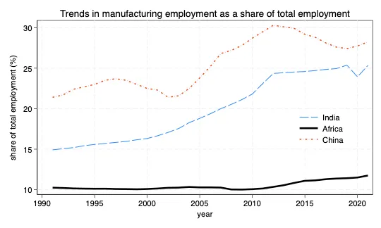
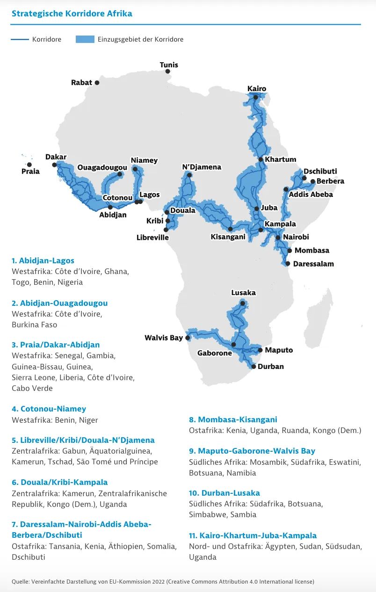
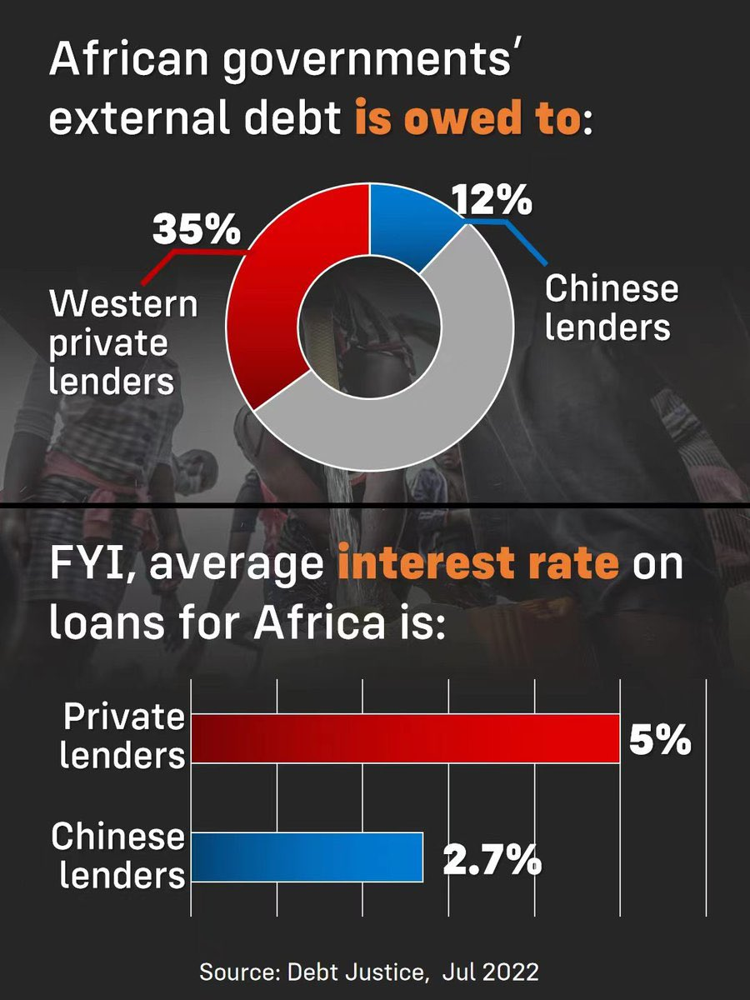

5 Africa
Opalo
A two-decade slump in regional growth rates
Talk of “Africa’s lost decade” is becoming common again, with evidence from stagnant or declining per capita incomes in African states amidst the ongoing global economic slowdown, the region’s fiscal squeeze, and a two-decade slump in regional growth rates (see figure below). Two dozen African countries are currently in or nearing debt distress as of June 2023 — with Chad, Ghana, and Zambia already in default. While many of these countries face a liquidity rather than a solvency crisis, the current high interest rate environment and their inability to access credit markets mean that they lack the means to buy themselves time to grow out of their high debt/GDP ratios.
In 2022 the region spent 31% of total government revenues to service debts.
African states are slated to keep paying relatively higher interest rates for sovereign debt on account of their low credit ratings.
In per capita terms, growth in the region has not increased since 2015. In fact, the region is projected to contract at an annual average rate per capita of 0.1 percent over 2015–25, thus marking a lost decade of growth in the aftermath of the 2014–15 plunge in commodity prices.
Unless African governments reorient their economies towards job-intensive economic growth, as opposed to low-productivity agriculture and job-scarce extractives, it is likely that the downward trend in growth rates will persist for the foreseeable future. Two important factors explain the slowdown in growth rates. First, the region’s economies — including leading giants like Nigeria and South Africa — continue to be heavily reliant on commodity exports with little to no value addition.
Consequently, any weakening of demand or price declines are likely to translate into slower growth. Commodity sectors also typically lack strong direct multiplier effects on the rest of the economy. There are only so many jobs you can get out of an oil rig or copper mine once they are built and running; and agriculture without domestic value addition gets you very little mileage.
African economies have historically struggled to create wage jobs. In the medium term, African economies are projected to generate a mere 3 million formal sector (i.e. wage) jobs against the over 10 million youth who enter the workforce each year. Wage earners account for a mere 16% of the African labor force, with the vast majority of workers confined in low-productivity agriculture or the informal sector. This situation seems to be getting worse. As shown below, labor productivity is declining across Africa.
It is also a gut-punch reminder that the much-needed policy reforms since the 1990s focused almost exclusively on macroeconomic stability from the perspective of monetary and fiscal policy institutions while paying little attention to labor productivity and the need to reduce the rates of informality in African economies. Indeed, a fair amount of development interventions continue to double down on expanding informality as a remedy to policy failures.
One shiuld resist the temptation to see the current economic cycle as a reflection of the disastrous long decade between 1980-1994. Back then, nearly two decades of commodity-fueled growth gave way to dwindling export earnings, closed credit markets, fiscal crises, collapse of government spending on essential public goods and services, and significant erosion of hard-won improvements in human welfare. Many of the policy responses offered back then made things worse. For example, shrinking already small governments weakened African states. Some states — like Liberia, Somalia, and Rwanda — simply collapsed. It took China’s economic rise and the associated commodity boom to knock African states onto a growth path.

Chinese lending to African governments has dwindled to a trickle, relatively speaking. The international commercial debt markets are too expensive for nearly all African states, forcing many to turn to domestic borrowing that is crowding out credit to the private sector and throttling economic growth. Meanwhile, multilateral lenders are stretched and unable to provide the amounts of concessional loans African countries need to weather the current storm without savage cuts on public spending. Add to this mix declining forex earnings from commodity exports and currency depreciations and you have several countries that are struggling to service their foreign public debts.
Most African countries are facing liquidity and not solvency crises — to be blunt, they just did a poor job of managing their debt servicing/maturity timetables and got caught by the timing of multiple global shocks (COVID, anti-inflation rate hikes in major economies, Chinese slowdown, and the war in Europe). Therefore, the immediate solution for countries that are distressed but have not yet defaulted should be to buy them more runway. Second, while there is a need for greater revenue collection and rationalization of expenditures in many African states, such efforts should not make things worse.
Intensified tax administration must be accompanied with policy reforms to improve the business environment, especially for small and medium domestic firms. Similarly, any cutbacks on spending must not erode the hard-won gains made in education attainment, health, and poverty reduction since the 1990s. Despite the concentrated indebtedness in specific countries like Chad, Ghana, Zambia, and others, the regional debt/GDP ratio is a very low 24%.
Nigeria and South Africa — which combined make up 46.3% of the region’s total economic output (and 24% of the population) — will grow (2022-2023) at a meager 3.1% and 0.95%, respectively.
There is a need to focus on jumpstarting growth in Nigeria and South Africa as anchors of regional economic dynamism.
Intra-Africa trade should be a core part of the answer.
African workers are becoming less productive, a situation that requires urgent attention from policymakers.
The ongoing decline in output per worker suggests rather dismal returns to all the investments in human capital, physical capital, and managerial capacity over the last two decades. The apparent stall in productivity gains is likely due to the region’s inability to cultivate sustained job creation in the manufacturing sector. While manufacturing output in Africa is certainly on the rise, the associated expansion in wage employment has been painfully slow.

The political economies of most African states militate against the growth of jobs-heavy domestic manufacturing.
The combination of legitimacy-starved incumbents with a tenuous hold on power and weak state capacity has historically made it difficult for African political elites to (1) protect their own property rights and (2) separate the political and commercial lanes among elites, a move that is critical for crafting successful industrial policies. African elites’ struggle to protect their own property rights, even while in power. With a few exceptions, most elites seldom accumulate easily visible and attributable wealth — for example through the ownership of productive large firms that generate mass employment. The dominant mode of accumulation is to secretly stash wealth abroad or hoard millions of dollars in cash outside of the banking system.
Under the circumstances, the region has historically been hostile to would-be independently successful businesspeople. Such businesspeople tend to be viewed by incumbents as potential political challengers that ought to be cut to size. Notice that the fusion of lanes makes it difficult for elites to specialize in either business or politics, resulting in a region full of mediocre politicians and politically-dependent mediocre businesspeople (this is not to say that there are no genuinely brilliant businesspeople in the region who succeed despite their governments).
To deal with this intra-elite impasse, many countries ended up with systems for accommodating migrant “middleman minorities” and foreign investors in critical sectors like agriculture, mining, finance, and fast-moving consumer goods. However, despite non-trivial investments in manufacturing capacity and decades-long rootedness, such commercial elites often lack the political resources (i.e. electoral and institutional influence) to significantly shift individual countries’ industrial policies in the direction of jobs-focused growth strategies. Indeed, many of these investors wisely cope with tenuous property rights regimes wherever they operate by domiciling their firms (and profits) in foreign jurisdictions with stronger institutions; and mostly focusing on trade facilitation with little domestic value addition.
All this to say that addressing Africa’s productivity slump will require structural reforms to entrench elite property rights in a manner that promotes domestic commercial revolutions in the region. In addition to being in a position to positively influence industrial policy in the direction of mass job creation and anchor foreign direct investments, investors with socio-political skin in the game are also less likely to run away with their capital during economic downturns.
Opalo (2023) There is an urgent need to unlock labor productivity in African economies
5.1 African corridors - Global Gateways
Tooze
Colonialism in Africa worked, until the Berlin Conference of 1884-5, largely through the identification of key corridors for trade whose control guaranteed access to commodities for the controlling power. Now the EU, and above all Germany, seek strategic corridors in Africa for access to key energy transition resources. In English, thanks to Claudia Baranzelli et al:
The paper has two interconnected bodies. The first one deals with mineral resource indicators and their role in drawing 11 EU–Africa Strategic Corridors, in a broader context of Africa–EU partnership. The second strives to understand how such Strategic Corridors are also mineral corridors, i.e. development promotors that use mineral resources as a catalyser to create and strengthen value chains and territorial organisation, boosting economic and societal development at regional scale. The results can help understand how Strategic Corridors can improve access to the present and future mines, mitigating the risk of supply disruptions of critical raw materials for the EU.
Tooze (2023) African corridors, Gazan homes, examining incomes, the AI divide & Habermas
5.2 Africa’s debt
Roberts
China is not a particularly large lender to poor countries compared to Western creditors and the multi-national agencies.

5.3 Mining
Radley
In the 1960s, newly independent African governments asserted sovereignty over their metal and mineral resources, in a reversal of their prior colonial exploitation by European mining corporations. In this excerpt from his new book Disrupted Development in the Congo: The Fragile Foundations of the African Mining Consensus, Ben Radley shows how transnational corporations have once again become the dominant force assuming ownership and management of industrial mining projects. Radley argues this latest reversal has taken place through a three-stage process grounded in a misguided reading of African economic stagnation from the mid-1970s onwards. Recent mining code revisions in several countries have been heralded by some as marking a new era of resource nationalism. Yet the new codes remain a far cry from the earlier period of resource sovereignty. The first three chapters of the book can be downloaded for free here.
Stage one: Blame the African state
Misguided African state intervention and government corruption were put forward as primary causal explanations, to the exclusion of other factors.
The point is to emphasize that successful adjustment will be elusive unless Africaʼs vulnerability to external factors is recognised. Such a recognition will serve in rethinking the form and content of Africaʼs structural transformation. Failure to account for such factors, even as one corrects for internal policy errors, can frustrate attempts at change and condemn them to involuntary reversal.
By downplaying the external and foregrounding the internal, the result is an analysis and diagnosis that lays the blame firmly on the state management and ownership structures underpinning national developmentalist ambitions in the 1960s and early 1970s, to the exclusion of external shocks and trends in the global economy.
Stage two: Liberalize and privatize
The World Bank told African governments to abandon any notion to use mineral resources to serve social priorities or developmental priorities and give up the running and management of minerals and mineral wealth to transnational companies.
Prior to the rise of China as an alternative source of resource-linked finance, and with many African countries still unable to access international capital markets, the Bank was able to exert significant influence through these grants and loans to implement its strategic vision for how mining should be organized and managed, as laid out in its 1992 Strategy for African Mining report:
Giving overall priority to capital-intensive, foreign-owned mining.
With the regulatory framework overhauled, foreign investment was unleashed to seek out fresh opportunities. Mining exploration in Africa increased from 4 per cent of total mineral exploration expenditure worldwide in 1991 to 17.5 per cent in 1998, and overall mining investment in Africa doubled between 1990 and 1997. The start of a commodity supercycle in 1999 gave fresh impetus to this activity. In 2004, the $15 billion invested in mining in Africa represented 15 per cent of the total of mining investment worldwide, up from 5 per cent in the mid-1980s and putting the region third globally, behind Latin America and Oceania. From 2002 to 2012, a period spanning most of the supercycle, mineral exploration spending in Africa rose by more than 700 per cent, reaching $3.1 billion in 2012.
The sweeping changes in African mining policy in the 1980s and 1990s were aimed at attracting FDI and increasing exports, in which they have been successful. Total FDI inflows into African least-developed countries rose fourfold from an annual average of $1.7 billion in the 1990s to $6.8 billion in 2000 to 2005…the bulk of which was directed to mineral extractive industries.
The dramatic increase in FDI growth since the 1990s has altered the composition of these economies, which have become increasingly dependent upon FDI as a source of development financing, and this level of dependence is greater today relative to other country groups and regions.
Stage three: Criminalize African miners
One final stage was required before transnational mining corporations could move front and centre. This involved dealing with the on-the-ground reality that, for many incoming transnationals, their prized deposits were already occupied by African miners involved in a wide range of labour-intensive forms of mining. Most commonly associated with gold and diamonds, labour-intensive African mining is also involved in the production of silver, copper, cobalt, tin, tantalum, iron ore, aluminium, tungsten, wolframite, phosphates, precious and semi-precious stones, and rare earth minerals, among others. Globally, labour-intensive mining has been estimated to contribute up to 30 per cent of total cobalt production, 25 per cent for tin, tantalum, and diamonds, 20 per cent for gold, and 80 per cent for sapphires.
Labour-intensive African mining has grown significantly since the 1980s to directly employ millions of workers across the continent, driven by three factors. First, the crisis of African agriculture has led to an increasingly important role for off-farm employment. Second, the decline of state-led national developmentalism and the collapse of welfare provisioning under the weight of structural adjustment during the 1980s exerted significant strain on the productive and reproductive capacity of rural African households. Third, rising commodity prices, especially during the supercycle of 1999–2012, pulled people towards the sector, where there were often higher wages and profits to be made than locally available alternatives.
Despite the sector’s importance to rural employment, African miners have typically been cast by the World Bank, African governments, and parts of the scholarly literature as ‘primitive’, ‘basic’, ‘inefficient’, ‘rudimentary’, and ‘unproductive’ (in contrast to the ‘efficient’, ‘modern’, ‘complex’, and ‘productive’ mining corporation).
As a result, labour-intensive African mining has been peripheral to mining development strategies on the continent. Criminalized by policy frameworks unless they submit to a set of procedurally complex, bureaucratically burdensome, and financially costly demands to formalize their activities, and cast as illegally encroaching on a concession once it has been assigned to a corporation, African miners have time and time again been forcibly displaced from their sites to make way for the construction of corporate-led industrial mines. Often financed by the incoming corporations themselves, and echoing violent colonial practices of the past, displacement has frequently taken place as government military-led ‘sweeps’.
These dynamics recall Marx’s description of primitive accumulation, or Harvey’s (2004: 74) reconceptualization of this as a continuous process of accumulation by dispossession, involving ‘the commodification and privatization of land and the forceful expulsion of peasant populations, conversion of various forms of property rights into exclusive private property rights, and suppression of rights to the commons’. Forcibly displaced and removed from the best deposits, African miners are restricted to working in less productive areas.
Recolonialization
With the African state framed as corrupt and mismanaged, and African miners as inefficient and unproductive criminals, the path was cleared for the en masse arrival of transnational mining corporations, across a far wider group of countries than was the case during the colonial period (when most mineral deposits remained unknown to foreign capital, particularly in West Africa). From Glencore and Pengxin in the DRC and Emirates Global Aluminium in Guineau, to Cluff Minerals and Etruscan Resources in Burkina Faso and Shandong Iron in Sierra Leone, to AngloGold Ashanti and Acacia Mining in Tanzania and Rio Tinto in Madagascar – the list goes on – foreign corporations dominate today’s landscape.
Recent Push-backs
Recent mining code and policy revisions led by African governments such as Tanzania, the DRC, Sierra Leone, and Malawi have begun to push back against this dominance, taking inspiration from the Africa Mining Vision, a framework developed by the African Union in 2009 to deepen the linkages between foreign-owned mining and national economies and strengthen government capacity to negotiate with and leverage developmental benefits from foreign mining corporations.
The mining industry and some scholarship has been quick to herald these revisions as marking a new era of resource nationalism. As a Bloomberg article proclaimed in 2019, ‘The fight between miners and African governments is just getting started’. Changes to date are yet, however, to provide a fundamental challenge to the dominant model of capital-intensive, foreign-owned mining industrialization on the continent. They remain a far cry from the earlier period of 1960s and 1970s resource sovereignty to which the discourse on resource nationalism alludes.